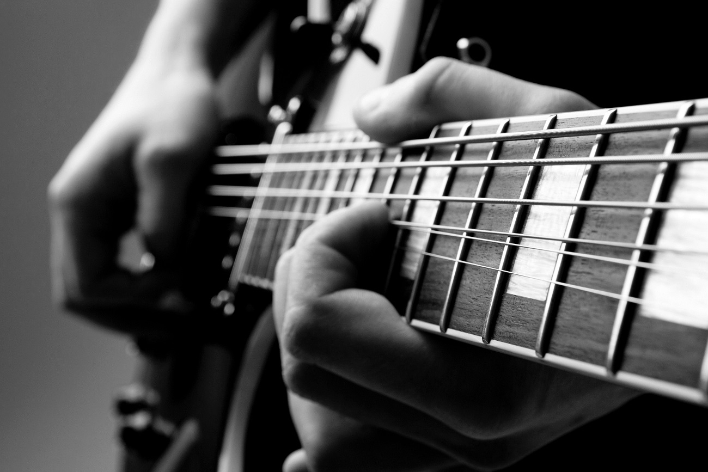

Programowanie kluczem do sukcesu.
Moją największą pasją jest muzyka. Ulubionymi gatunkami jest rock i heavy metal. Do mojego gustu zaczyna przemawiać również dubstep. Gram też na gitarze i znam podstawy keyboardu. :)

Coraz więcej uwagi poświęcam e-sportowi. Najbardziej interesujące według mnie to Counter Strike Global Offensive oraz Starcraft II. Może kiedyś uda się zostać testerem nowej produkcji!